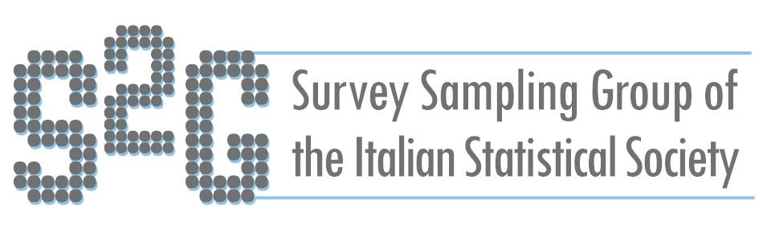

S2G
Group of the Italian Statistical Society
S2G - The SIS coordinating Group on "Survey Sampling Methodology" - was founded, within the context of the Italian Statistical Society (SIS), to contribute to the promotion and coordination of applied and methodological research on survey sampling in the fields of economics, social and demographic sciences, of official statistics and in the studies on biological and environmental phenomena.
The members of the Group undertake to cooperate with the SIS and its Coordinating Groups both at the scientific and organizing level; the member activities cannot coincide with the SIS Meetings or with the meetings of the SIS Coordinating Groups; the members also undertake to contribute and organize SIS activities.
We aim to:
- Create a network of statisticians interested in the broader aspects of survey sampling methodologies to exchange ideas, discuss on research in Statistics.
- Create a network with European and International satisticians of other scientific societies.
- Promote contributions and specialized sessions on Survey Sampling Methodology within the institutional events of SIS;
- Support those who promote, coordinate, or participate in the development of Survey Sampling Methodology training programs at any level and in particular in the universities and to promote the organization of courses, schools, or tutorials within workshops;
- Promote the dissemination of the scientific activities of its members, and of work and research opportunities in Survey Sampling Methodology.
NEWS:
ITACOSM2025-IASS: Shaping the future of survey statistics in the data-driven era Bologna, 1-4 July 2025
Join S2G-SIS
Members of SIS (who are up to date with the payment of fees) can compile the form available here.
If you are not a member of SIS, first subscribe to the Italian Statistical Society (SIS), specifying you want to join also S2G-SIS and then compile the form available here.
Events
ITACOSM is a bi-annual international conference organized by the Survey Sampling Group (S2G) of the Italian Statistical Society (SIS).
Check out the forthcoming ITACOSM or other events organized or endorsed by S2G-SIS